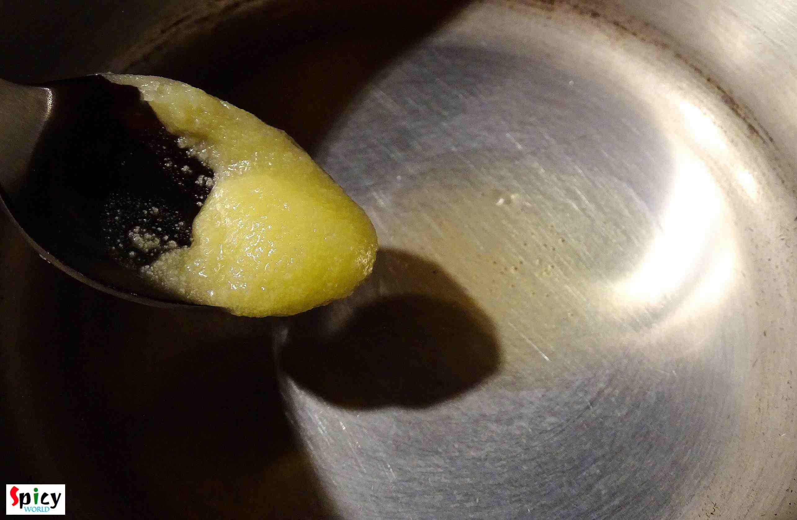
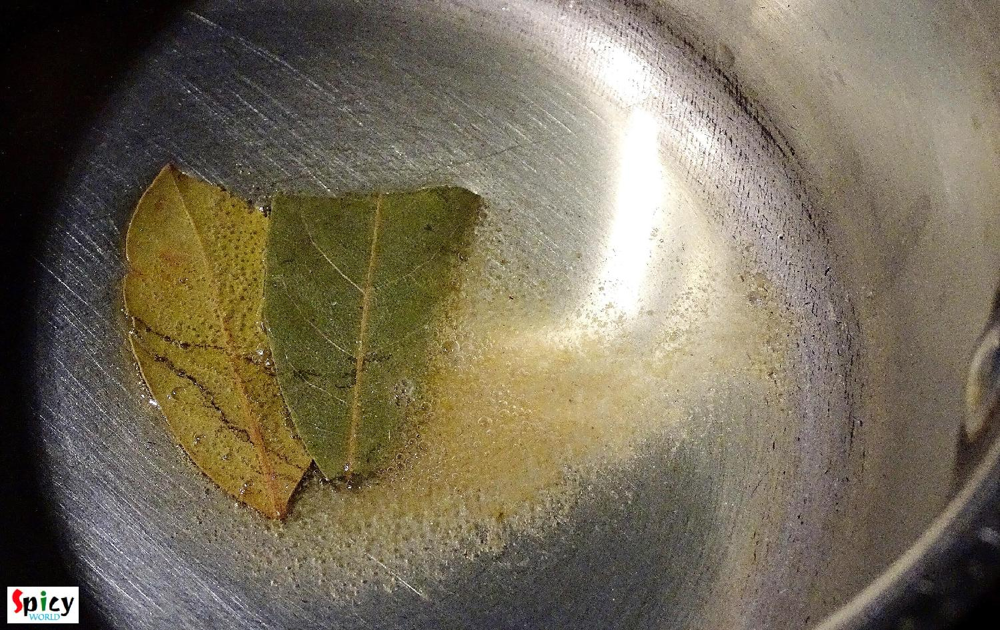
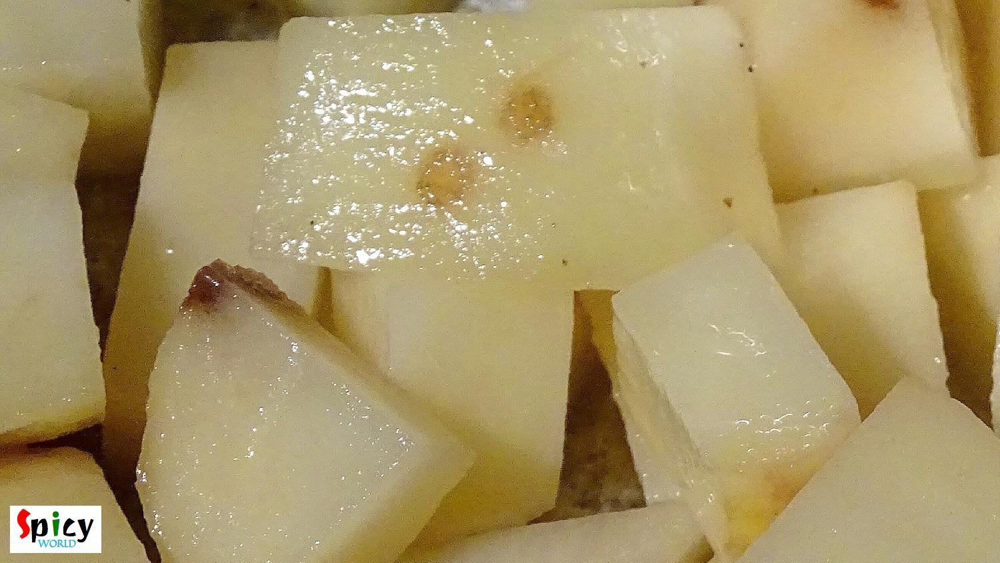
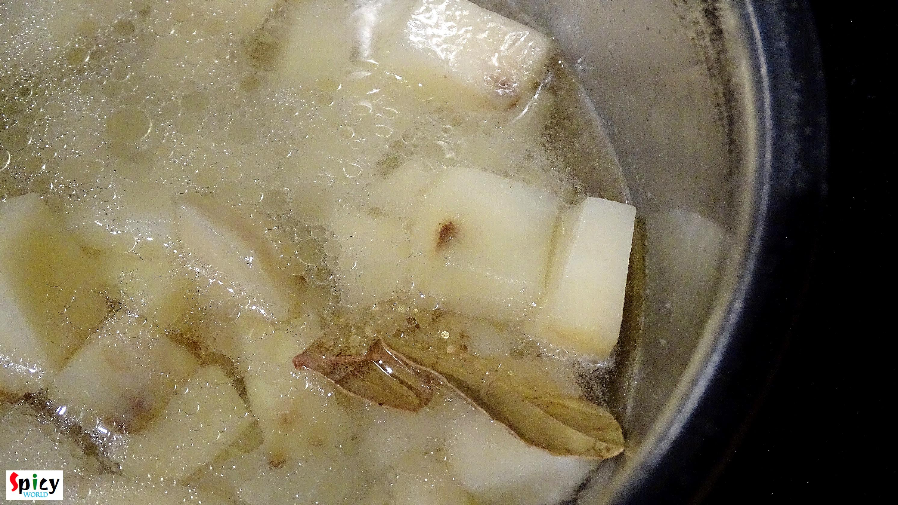
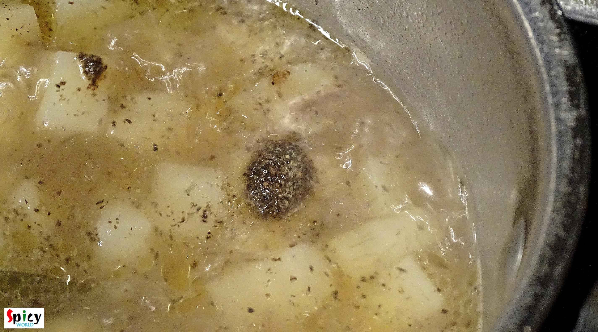

Ghee Moricher torkari / Ghee and Black pepper curry / Potato Stew
From childhood, whenever I got attacked by cough and cold, my mom used to feed me this 'ghee moricher torkari' along with some puffed rice / 'muri'. Its nothing but a simple potato curry with mild flavors of 'ghee' and 'morich' / black pepper. According to my mom, the heat of black pepper goes well against cold and cough. Magically my neck always felt better after finishing this mom-made curry. The recipe is very simple but it tastes delicious. Specially you will enjoy this curry during winter along with some luchi (poori) or parathas.

Ingredients
- 1 large potato, cut into cubes.
- 2 Teaspoons of ghee.
- 1 bay leaf.
- 1 Teaspoon of black pepper powder.
- Salt.
- Water.

Steps
Heat 2 Teaspoons of ghee in a pan.

Add bay leaf in the melted ghee.

Now add the potato cubes. Mix it well for 4 minutes.

Then add salt and a cup of water. Mix them well. Cover the pan and cook it for 15 minutes.

Then add black pepper powder. Mix it and cook this until potatoes become soft.

Check the seasoning and adjust it according to your taste.
Turn off the heat and lastly add half Teaspoon ghee on top.
Your ghee moricher torkari / potato stew is ready ...
- Serve this hot with luchi, paratha or muri ...
")